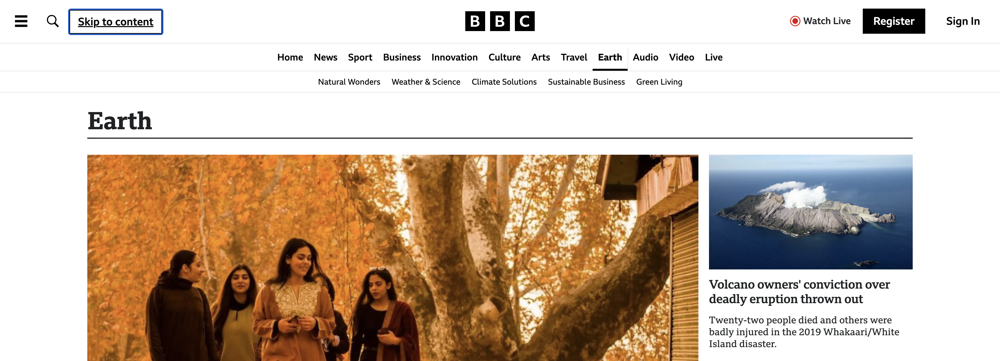

Skip to Main Content Link
March 1, 2025
One accessibility feature that is relatively unknown to those who don’t use their keyboard to navigate webpages is the “Skip to Main Content” link. Also known as a “Skip to Content” link or an accessibility skip link, this is a link that usually appears as the first link on the page before the main navigation menu. This link is typically hidden unless the keyboard is focused on it. When selected, this feature will skip the focus from the “Skip to Content” link to the main content of a webpage, bypassing the main navigation menu.
The website for BBC News has an excellent example of a “Skip to Content” button: when the focus is on it, it appears, it’s sufficiently large, it has a highlight around it, the text has good color contrast against the background, and perhaps most importantly, it works! If you are able to and haven’t tried it already, try going to BBC or some of your favorite webpages and tabbing through them.
The “Skip to Main Content” link is effective at saving time, energy, and potentially frustration for users who utilize a keyboard to navigate webpages who wish to skip to the main content of a webpage. Without it, a user may be stuck tabbing through ten or more links and buttons in a navigation menu before they’re able to access the content past the navigation menu that they wish to read. And that’s only if they don’t stuck in a poorly-designed menu that traps their focus (this has happened to me before with drop-down menus).
So, how do you actually implement a "Skip to Content" link in a webpage? At the most basic, you'll need HTML and CSS:
HTML
<body><!-- This is the skip to content link: --><ahref="#main"class="skip">Skip to content</a><!-- Navigation menu --><navrole="navigation"> <ahref="home.html">Home</a> <ahref="about.html">About</a> <ahref="contact.html">Contact</a> </nav><!-- Main content --><mainid="main"role="main"> <h1>Heading</h1><!-- Put page content here --></main> </body>
In this HTML snippet, the "Skip to Content" link is above the navigation menu, located within the <nav> tag.
After the navigation menu is <main>, where main content can go. Some important things to note here are that
href="#main" needs to be in the "Skip to Content" link <a> tag in addition to id=“main" in <main>.
This anchor tag setup is really where the magic happens that allows a user to bypass other content—in this case the nav bar—to other content on a page.
If you'd like to style the "Skip to Content" link to be hidden until it's focused on, you'll most likely want to include a class in order to
stylize it. I put class="skip", but the name can really be anything as long as it matches the class in your CSS content.
As for CSS, you're welcome to use your own, but this is what I currently have for my website that seems to work:
CSS
.skip{position:absolute;left:-10000px;top:auto;width:1px;height:1px;overflow:hidden; }.skip:focus{position:relative;left:0px;top:1em;width:auto;height:auto;font-size:large;padding:0.5em;margin-left:5em; }
When the "Skip to Content" link is not in focus, web developers typically like to hide it.
With position: absolute and left: -10000px, the link is positioned -10000 pixels to the left
relative to the nearest positioned ancestor. In many cases, this would be the main navigation menu or perhaps a header logo.
These keep the link out of the way and hopefully out of sight. Just in case it's not out of sight, we can make the height and width of the link really small, such as with
height: 0px and width: 0px.
Another possible solution could be to add opacity: 0, which should change the opacity to zero or invisible.
When the "Skip to Content" link is in focus, however, we want to make sure that it's visible to users.
To make sure that it's within a user's viewport, we should position the element relative to its normal postion with position: relative
as well as set the horizontal position of the link to a location that we know will be on the screen, such as left: 0px.
If you had decided to hide your link with a small height and width, you'll want to make sure that you include code to reset them to a more
visible size: height: auto and width: auto. If opacity was changed, you'll want to make sure that the element is visible
again with opacity: 1.